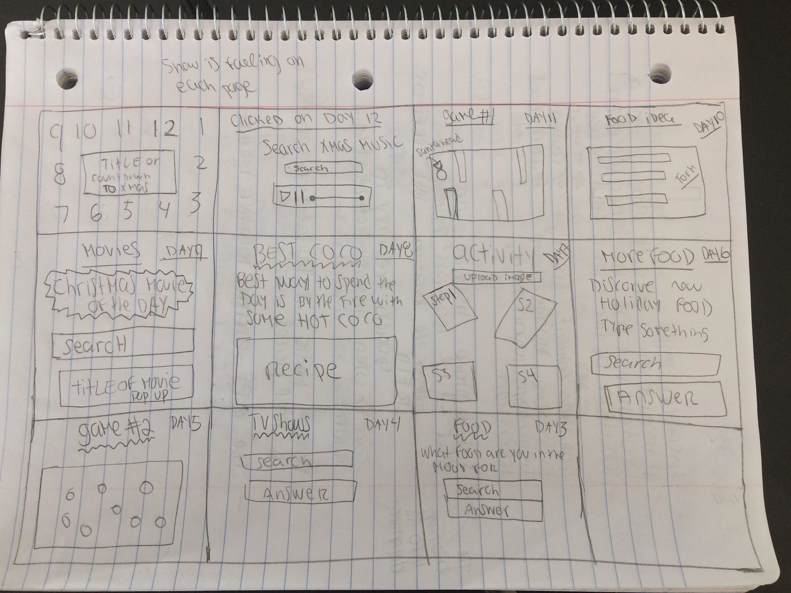

Final Project Proposal
Name: Still thinking about it....
QUESTION 1
What is your starting topic? What importance does it hold for you? For others? Why is it important to make this topic into an explorable networked space?
My starting topic is the holidays and bring happiness via a online environment. My starting topic is of importance to me because the holidays is normally a happy time of the year that brings everyone together. ...It is a time where everyone should put there difference aside and enjoy some good quality time with loved ones. It is the one time of year that where people can go all out and show their love for the festive times and should not care about what other people think. In other words it is supposed to be the most wonderful time of the year. I want to showcase that happiness through this final project via an online database advent calendar. The calendar is basically (almost) everything that someone would experience in real life but thought the internet. Every door has something surrounding the holiday happiness behind it weather it is a movie, song or christmas food recipes etc. It is important to make this topic an exploriable networked space because it can give someone who doesn't have the opportunity to spend it when anyone; a piece of what christmas happiness is. his project also adds the element of surprise when you open the doors and find something new each day. That along can being make someone happy.
QUESTION 2
Think about the kind of relationship you wish to encourage between your users and this “space”. How can you use this “space” to destabilize the users and make them reflect on themselves, their environment and society?
The type of relationship I wish that the users will have with this holiday space is a sense of happiness, joy and start to feel in the mood for the festive times. ...Every door of the advent calendar will be a different aspect of what the holiday season is all about and with this element hopefully it will bring a bit of joy to those who do not feel like they are in a joyful environment during the time of year that is supposed to be quite happy. This advent calendar will bring the holiday spirit right at your fingertips, literally via the internet. This environment will help the users reflect on what they might consider happiness to be to them and if one user has a good relationship with this space, they might share the advent calendar with other people and so forth so other can feel the same happiness. By sharing the calendar with other people they can than experience their own relationship with the space and have their own certain feeling towards the space as well. Having a space like this it can make people reflect on what is most important during the holidays and that is to be surrounded with good energy and reflect on what is truly important in life because. If there is one time a year where everyone should be feeling any kind of happiness and joy, that should be during the holiday season.
QUESTION 3
Think about the notion of empowerment. Will your “space” help, challenge, teach, enable collaboration, understanding between user(s)? How and Why?
When it comes to the notion of empowerment, I think that my space will help people on different levels. ...My space can help someone by changing their mood. If someone is having a off day and when they use the advent calendar, it can hopefully shift their mood into a somewhat happy mood (at the end of the day it's not going to bring that much happiness in reality but it can put a smile on your face and that smile can change someone mood). The space can also enable collaboration by helping to bring people together by sharing the calendar. By sharing the advent calendar with other people, it will get more people that might develop a relationship with the space and the space might help, challenge etc more people. The ways my space can challenge some people is, it is quite possible people might not know what something behind a door actually is and it might be challenging for them to figure out what it is but they can always ask people if they dont know what it is and by asking someone that can help bring new people to the advent calender. I also plan on having a database that will generate holiday recipes and someone might possibly find the way to make the recipe challenging. The space can also teach someone something new from behind the doors. You never know, someone might not know all the christmas traditional or aspect, for example they might not know a recipe or a song or a movie (I plan on making a game, holiday songs and movies database list as well) and with this space they can expand their knowledge of the holidays. It is always good to learn something new.
Visual Story Board
Click on image to make it bigger
Research and give a brief summary of at least 3 similar projects
Example #1 Click here for example
This project is a online advent calendar created by a Illustrator named Jacquie Lawson. ...A user would have to pay for this advent calendar. It is as much as a coffee and even less if you buy more than one. The calendar is compatible with PC, Mac, phone and iPad. Lawson makes the calendar for users to enjoy during December. This space is for all ages. This calendar is literally a animated virtual Christmas village where there is shops, people walking around with their family and even a snowman in the middle of the village and everyday the village get more and more ready for Christmas. The village is decorated with Christmas light, a big tree in the middle of the village. Snow is always falling down on the village. You can even see the style and space of every snowflake falling. A user can spend hours exploring what the calendar has to offer. There is also hidden surprises around the village. Every day there will be a different door to open that will be Christmas related, like a game, a puzzle, a animated Christmas story. A pop up will pop up with the number 1 to 25 on it and all the uses has to do is click on the door that corresponds to the day for a new activity to do in the village. A user can also design digital snowflakes, play some games that look like a the game you will see on FaceBook, where you have to match the same color gems to level up. (All Christmas related of course) There is also a room where users can go and have a virtual relaxation section in front of a fire in a cozy room with sofas and books.
Example #2 Click here for example
This space is also a online advent calendar. It was created by a German man named Hans Braxmeier and his team. ...But with this calendar the user gets to decide what is behind each of the doors. The creator of the calendar just created the model of the advent calender. The creator does not decide what goes behind each of the doors. The users can only link to other place through the advent calender, like videos from youtube or vimeo, articles, website, online gift cards etc. The space also gives you options of what background to use to have behind the doors. Some of the images that you upload for the background will not accepted if the image does not follow the quality guidelines. The actually calendar fills up the whole screen and it is not a animated visual space where you can explore like the example above. The doors are shown on top on the background image you have picked form the images provided or uploaded. You have to sign up through email. They give you a link through your email that can make the user put whatever they want behind the doors. You click a button probably through your email on the screen changes in to the calendar with the 24 doors on it. All the doors are different sizes with door number 24 being the biggest door. You click on a door and than that days element will pops up.
Example #3 Click here for example
This is a advent calendar that users can use in their companies marketing campaigns. ...This advent calendar works on any website or a FaceBook page. This calendar is aimed to strengthen your brand on social media. This calendar is not free. This is the most expensive one out of the three examples. There are two options to buy: first, is just for Christmas and the other one is throughout the whole year. You can try it for free before you buy. The normal advent calendar cost 1490 euros. The quiz and the advent calendar cost 1990 euros. There is also the custom design, where the advent calender people prepare a complete design for your calendar. There is also a newsletter where a company can get two months free use of their email marketing program. you get things just because it is Christmas. Once again there are 24 doors to open for both, the normal advent calendar and an quiz calendar. The quiz advent calendar is not one where you get things just because it is Christmas. You have to answer a question and the user wins a prize. The quiz advent calendar is not one where you get things just because it is Christmas. You have to answer a question and the user wins a prize. If you get it right you win the prize - the company can decide what the prize is - and if you do not get it right than you do not get a prize. The people putting together this advent calendar can also make a quiz calendar throughout the year and not just for christmas time. A creator can fill the doors with any questions they want, they can be about TV and movies, music, space, art etc. It can be filled with useful content or content that is not useful but interesting to know. Companies can send emails to the users to remind them to not forget to open their doors. These email get send everyday to the user. This will help the users be engaged throughout the holidays. The website where a company creates the advent calendar has templates that people can pick from to design the advent calendar or the website has a software that comes up with your own design for the calendar.
Write a paragraph on how and why your project will be different and more interesting in comparison to the projects you research
When I first thought of this idea I thought I was coming up with a one of a kind idea but from the examples above that is not the case. ...But I still think my project will be interesting because of the database componted. The users will get a different experience; it will not be “open the door, here is your gift” but it will be “open the door, read the question, fill in your answer and get a response base on what the database comes up with” and if the database cannot find any match with what you types in than you wont get anything. But you can always keep trying until you get a answer. If you do not like what answer you get, you can always retype your answer until you get something that fits what you like. This advent calendar will not only database, but there will also be a few games with a christmas theme, that I think will be fun to play just by anyone.